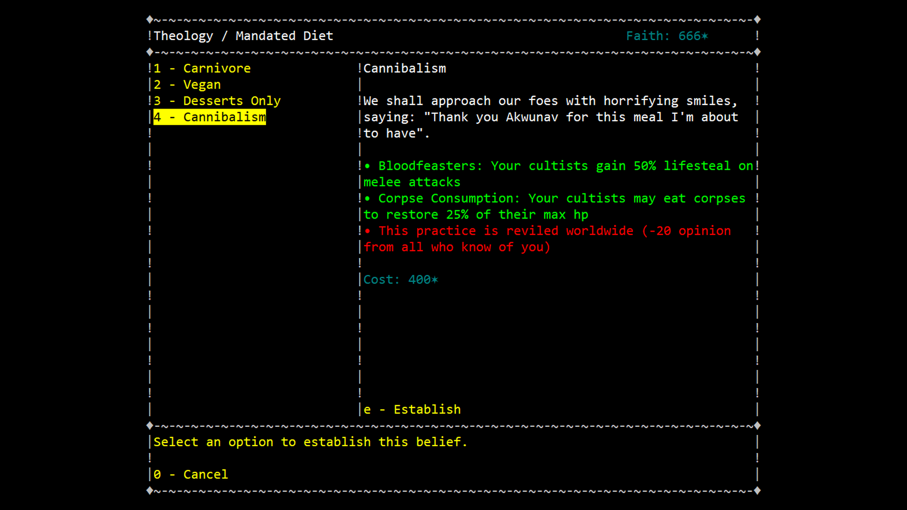
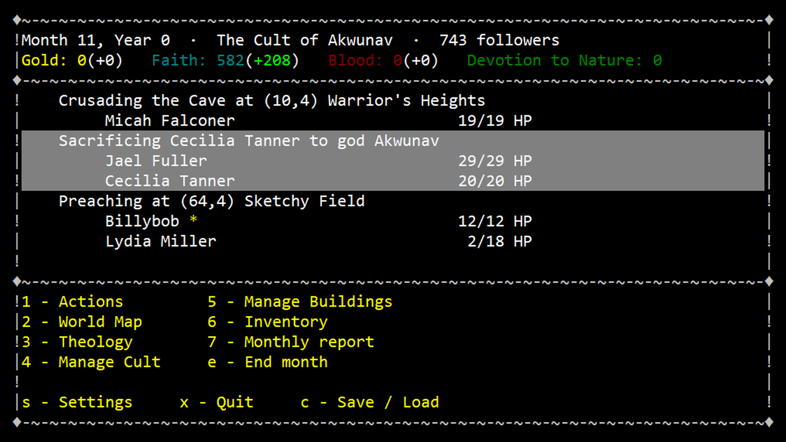
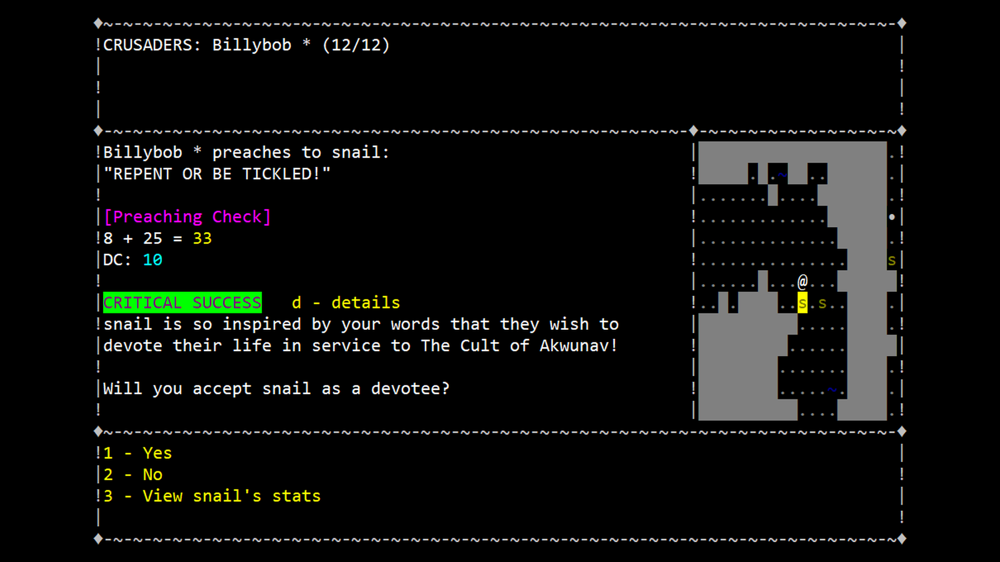
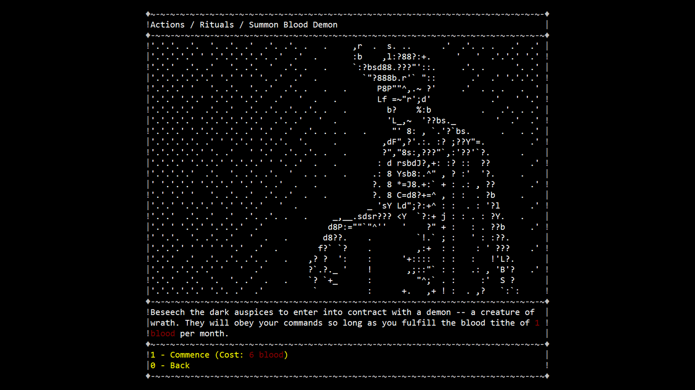

Create your own cult, perform forbidden rituals, and crusade against the filthy non-believers. It's time to play god. CultGame is a cult simulator RPG where you start your own cult in a procedurally generated fantasy world with haunting ASCII art.
| Game Title | CultGame |
|---|---|
| Developer | Bucephalus Studios |
| Publisher | Self-published |
| Release Date | Alpha Demo: October 27, 2026 / Full release TBD |
| Platforms | Windows, Linux |
| Store Pages | Steam, itch.io |
| Genre | 4X Strategy, RPG, Simulation |
| Website | bucephalusstudios.com |
| Press Contact | jeff@bucephalusstudios.com |




In CultGame, you create a character who decides to start their own cult in a procedurally generated dark fantasy world with its own unique history, factions, and host of other religions to compete against. No two playthroughs are ever the same.
As a cult leader, you will find yourself doing various fun activities such as preaching to the unwashed masses, crusading against heathens, and performing forbidden rituals. All the while, you'll gather faith to upgrade and customize your cult's beliefs and amass gold to invest in ventures such as weapons, drugs, and real estate.
Your cult will rise from obscurity to become a true force for change in the world, and that change is entirely up to you. Your objective in CultGame can range from world domination to launching yourself into the sun. With so many choices, CultGame dares to reward absurdity and meme-strategies just as much as calculated planning is rewarded in traditional strategy games.
Bucephalus Studios LLC is a solo indie game studio founded in 2021 by Jeff Stevens in Columbus, Ohio.
Constrained by being a programming noob, Jeff decided to make a silly create-your-own religion Madlibs game in the command prompt that eventually grew Lovecraftian tentacles and transformed into something horrifically larger and more outrageous than he ever originally intended.
Collaborating with Bucephalus Studios on CultGame is the award-winning ASCII artist littlebitspace, creating beautiful dark-fantasy ascii art for many parts of the game, and Evan Stevens, a musician bringing a groovy lofi hip-hop from hell soundtrack.
CultGame was developed entirely in C++ without a game engine. Built with the curses terminal library, CultGame runs entirely out of your computer's command prompt! Due to virtually no graphical overhead, most computers should be able to run the game without any problem whatsoever. Based on our research, CultGame should be able to work on operating systems as old as Windows Vista.
For press inquiries, interviews, or additional information, please contact jeff@bucephalusstudios.com